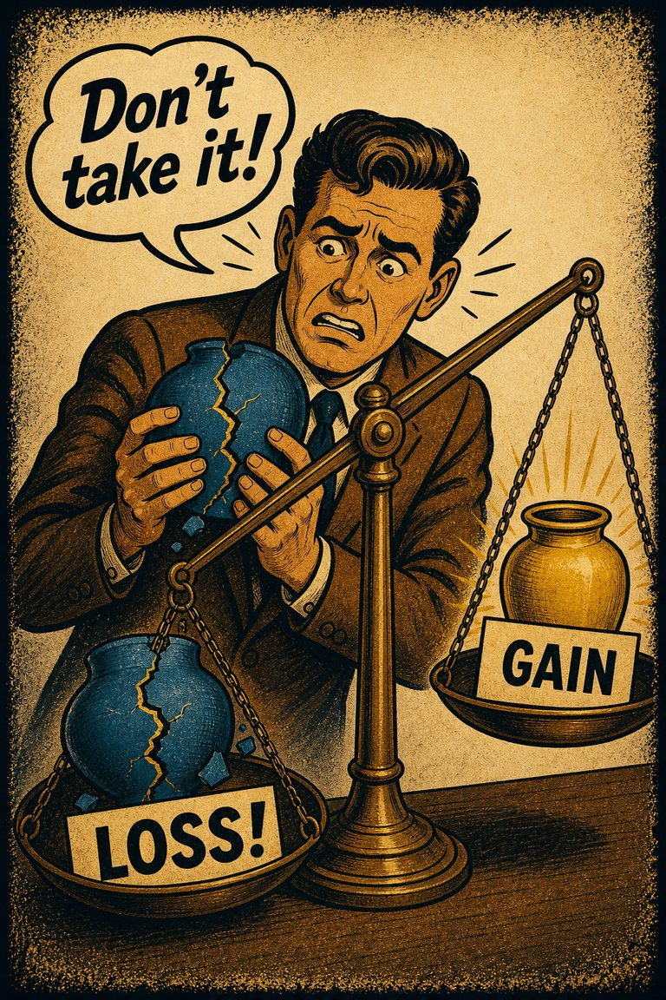
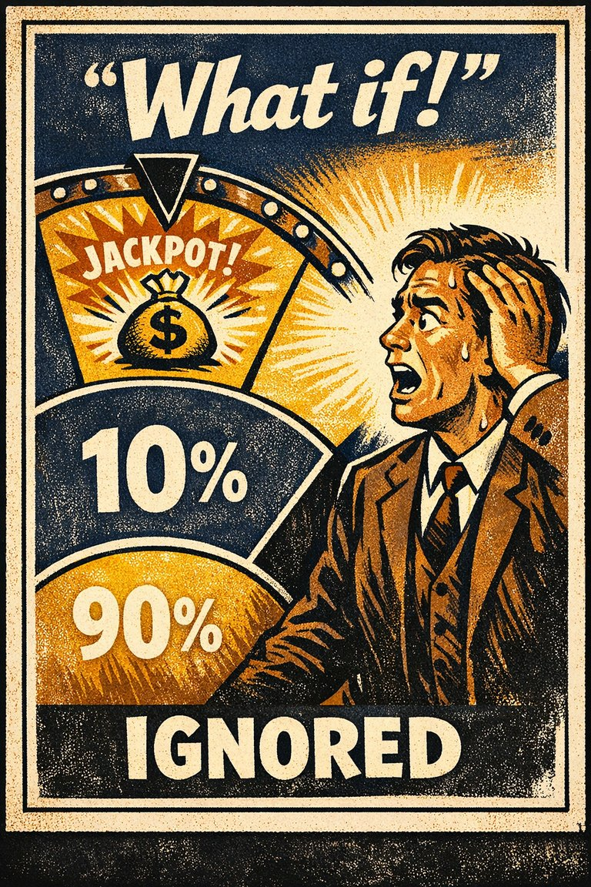

Common in public communication
90
Language design is often where the steering happens before argument begins.
Rare
Frequent

Cognitive Biases
A practical cognitive-bias site with clear definitions, learning paths, assessments, self-audits, and debiasing tools.
Cognitive Bias
The tendency for the same underlying information to produce different judgments depending on how the options or outcomes are described.
What it distorts
It bends decisions by making wording, context, and presentation style look like evidence rather than like packaging.
Typical trigger
Risk communication, health choices, policy messaging, negotiations, dashboards, and emotionally loaded labels.
First countermove
Rewrite the decision in at least one alternative frame before trusting your first reaction to it.
Coverage depth
Quick reset
What changed here besides the wording, emphasis, or emotional staging of the same choice?
Presentation changes what feels central, normal, risky, or morally salient. The structure of the choice may stay fixed while the felt meaning of the choice shifts.
These are classroom-facing editorial estimates for comparing how the bias behaves in use. They are teaching aids, not measured statistics.
Common in public communication
90
Language design is often where the steering happens before argument begins.
Easy to spot from outside
65
Fairly visible once the alternative wording is supplied side by side.
Easy to innocently commit
78
People often think they are just describing the option naturally.
Teaching difficulty
29
One of the easiest biases to demonstrate with paired wording exercises.
This comparison makes the hidden pull easier to see before the technical label has to do all the work.
Biased move
This is like choosing the wine by the lighting in the room before you have tasted it.
Clearer comparison
Presentation matters, but when the atmosphere starts substituting for the underlying comparison, the choice is no longer being made on the merits alone.
Do not use this label for every persuasive description. Framing is not just rhetoric in general. It is the specific case where equivalent information produces meaningfully different judgment because of presentation alone.
Use this label when two equivalent or near-equivalent descriptions pull judgment in different directions without new evidence entering the scene.
Use the quick check, caveat, and nearby confusions together. The fastest diagnosis is often the noisiest one.
Each example changes the surface context while keeping the same hidden distortion in place.
A medical choice looks safer or scarier depending on whether the description highlights survival rates or mortality rates.
A proposal gains support when described as protecting what the team already has, but loses support when described as a new risk-heavy initiative, even though the substance is unchanged.
Political language wins support by casting the same policy as relief, protection, burden, or threat depending on which reaction the speaker wants to activate.
The framed version feels like the thing itself, so it is easy to forget that a different wording could have shifted your judgment sharply.
Teaching note: This page is especially useful for media literacy because it shows how persuasion can happen long before any explicit factual dispute.
The strongest debiasing moves change the process, not just the label.
Translate the choice into a second and third wording before treating your first reaction as informed.
Require one person to restate major options in neutral language and one person to restate them in the opposite emotional frame.
Design forms, dashboards, and policy explanations so equivalent options are presented symmetrically.
Practice And Repair
Framing becomes teachable when people see that the option did not change, only the staging around it. That is the moment the packaging stops impersonating the substance.
A choice is described through emotionally selective wording, survival versus mortality language, or a setup that makes one dimension feel primary.
The current wording feels like the natural shape of the problem rather than one presentational angle among several.
A reaction to wording or emphasis gets mistaken for a reaction to the underlying evidence or structure.
Translate the choice into a neutral version and an opposite-valence version before trusting the first reaction.
If this same option were described with the emotional polarity reversed, what would happen to my judgment?
Spot It
Slow It
Reframe It
These distinction guides slow down the most common nearby-label confusions before the diagnosis hardens.
Anchoring pulls judgment toward a starting value; framing changes judgment by changing how the same substance is described.
Quick rule: Ask whether the distortion is caused by a starting point or by a presentation shift.
These are nearby labels that can share the same outer appearance while differing in what actually drives the distortion. Use the overlap, the distinction, and the diagnostic question together before settling the call.
Why compare it: Default effect privileges the preselected option; framing effect changes how the options feel before any default is even chosen.
Why compare it: Loss aversion overweights downside; framing effect helps determine whether the same choice is experienced as downside or upside in the first place.
Why compare it: Neglect of probability underweights the numbers; framing effect can distort the reaction even when the numbers are present.
These are useful when the label seems roughly right but the process change still feels underspecified.
What would this same option sound like if it were described in the opposite frame?
What has changed here besides the wording or emotional emphasis?
Am I responding to the substance of the tradeoff or to how the tradeoff has been staged?
These sourced cases do not prove what was in someone's head with perfect certainty. They are teaching cases for showing where the bias pressure becomes visible in practice.
People often reverse risk preferences depending on whether identical outcomes are framed in terms of lives saved or lives lost.
Why it fits: The choice structure stays constant while the description changes the felt meaning of the choice.
Wikipedia · 1981
Default wording and organ-donation uptake
How the choice is presented and preselected can substantially affect participation rates.
Why it fits: The presentation changes the path people experience as normal or safe.
Wikipedia · Modern policy examples
The Asian disease framing problem
Equivalent public-health outcomes produced different preferences when described in lives-saved versus lives-lost language.
Why it fits: The wording changed risk preference while the underlying outcome structure stayed equivalent.
Science · 1981
Use these sources to move from the teaching page into the underlying literature and seed reference material. The site is still written for clarity first, but the stronger pages should also be traceable.
The standard source for preference reversals caused by equivalent but differently described options.
Seed taxonomy and broad coverage are drawn from Wikipedia's List of cognitive biases, then editorially reshaped into a teaching-first reference.
Once you know the bias, these nearby tools help you use the page in a real workflow rather than as a static definition.
Curated sequences where this bias commonly appears alongside a few predictable neighbors.
Short audits you can run before the distortion hardens into a decision, a verdict, or a post-hoc story.
Bias-aware AI prompts that widen the frame instead of simply endorsing the first preferred conclusion.
Printable lessons and workshop packets where this bias appears in context.
A mixed scenario set that can quietly pull this bias into the question bank without announcing the answer in the title first.
These links widen the frame around the bias without interrupting the core lesson on this page.
An article on how menus, proxies, defaults, system outputs, and urgency cues can manufacture what later feels like a straightforward preference.
CogBias theory
These neighbors were selected from shared categories, shared patterns, and explicit editorial links where available.

The tendency to favor the preselected or default option simply because it is already positioned as the path of least resistance.

The tendency for losses or giving something up to feel worse than equivalent gains feel good.

The tendency to ignore or drastically underuse probability information when making decisions under uncertainty.

The tendency to push back against a perceived attempt to limit one's freedom of choice, sometimes by moving toward the very option one was being steered away from.

The tendency to avoid options when their probabilities are unclear, even if the unclear option may not actually be worse than the familiar one.

The tendency to give excess weight to the opinion of a high-status or authoritative source independent of whether the source has earned that weight on the specific issue.